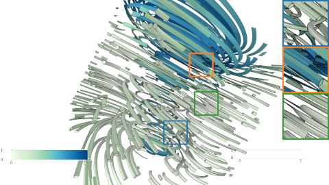
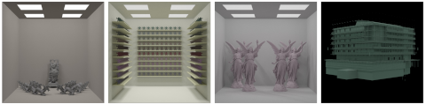
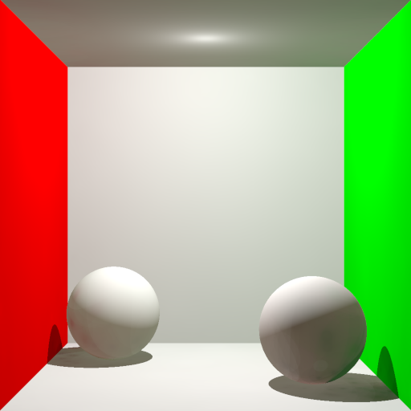
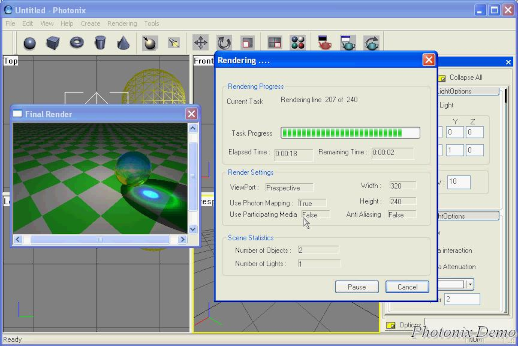

Currently, I'm a research student pursuing my PhD under the supervision of Prof. Dr.-Ing. Carsten Dachsbacher. Previously, I obtained M.Sc. degree in 2011 and B.Sc. in 2004 from the Computer Science Department, Faculty of Computer and Information Sciences, Ain-Shams University, Egypt.
Research Interests
- Computer graphics
- Scientific visualization
- Parallel processing
- Real-time and interactive rendering techniques
Publications
|  | Zeidan, Mahmoud, Christoph Peters, Tobias Rapp, and Carsten Dachsbacher. "Versatile Geometric Flow Visualization by Controllable Shape and Volumetric Appearance." in Smart Tools and Applications in Graphics (STAG), 2022. Link |

|
Zeidan, Mahmoud, Tobias Rapp, Christoph Peters, and Carsten Dachsbacher. "Moment-based Opacity Optimization." in Eurographics Symposium on Parallel Graphics and Visualization (EGPGV), 2020. Link |
|  | Zeidan, Mahmoud, Taymoor Nazmy, and Mostafa Aref. "GPU-based Out-of-Core HLBVH Construction." in Eurographics Symposium on Rendering (EGSR) - Experimental Ideas & Implementation (EI&I), 2015. Link |
Thesis
|  | Zeidan, Mahmoud, Applying Parallel Processing Approach for Interactive Global Illumination, master's thesis, Ain-Shams University, Egypt, July 2011. Link |
|  | Zakaria, Ahmed, Zeidan, Mahmoud, and Hamdy, Ahmed, Photonix: A 3D Modeling tool and Global Illumination Renderer using Photon Mapping, bachelor thesis, Ain-Shams University, Egypt, July 2004. Link |
Hobbies
-
Painting and modeling on physical and digital media
I enjoy others' drawings and paintings, and I use my interest in art to complement and enrich my research experience in computer graphics. I am also developing my digital drawing skills in GIMP, Inkscape, Krita, Procreate, Clip Studio Paint, as well as exploring 3D modeling with Blender.
My art profile on CARA | Interesting digital art tools -
Woodworking
Bringing geometry and 3D concepts into practical creations.
-
Nature walks
Simply enjoying time outdoors — walking, sitting on the grass, and breathing fresh air.
-
Writing and blogging
My writing projects in Arabic are still in progress and not yet published, as I am currently prioritizing my PhD thesis.